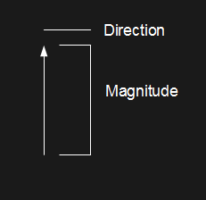
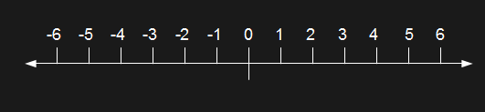
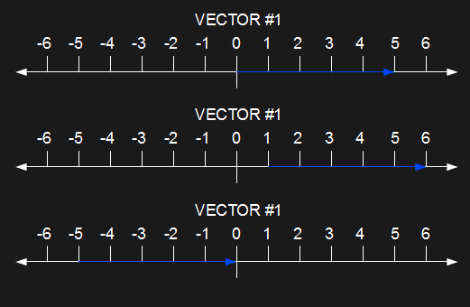
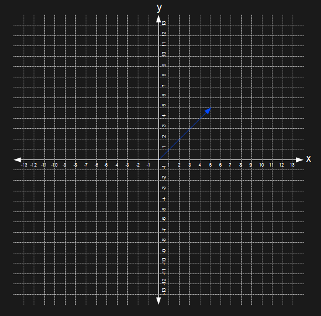
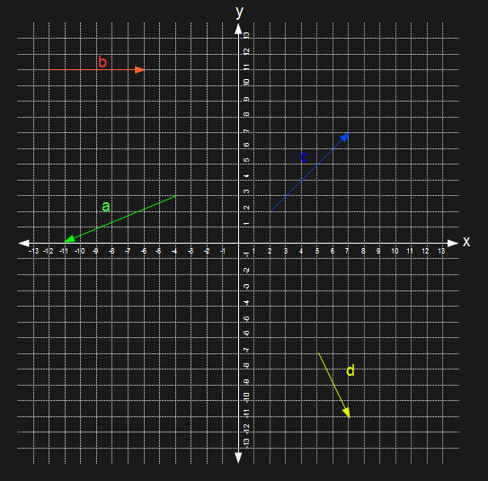
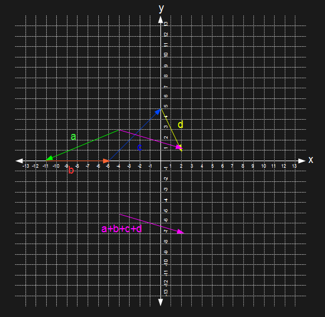
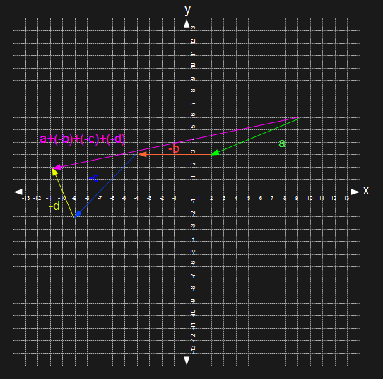
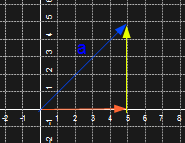

A vector is... "most generally, an element of a vector
space; in physics and geometry, a Euclidean vector, used to represent physical quantities
that have both magnitude and direction."
[wiki]
What is it?
Well, I suppose the first step would be to find out what
magnitude and direction mean coupled with the term "vector". Better yet, what does a
vector look and act like in comparison to things we've seen before (coordinate planes,
etc)?

On the left is an image of a vector. It is an arrow,
which is the most popular approach to visually displaying a vector; in this case, the
length of the vector is its magnitude and the arrow indicates the vector's direction.
The magnitude (length) of a vector is just a visual
depiction of the size of the vector's numeric value. In order to better illustrate this,
let's draw the same vector but on a number line.

Here's our number line, spanning -6 to 6 because that's
the way it came out; don't complain. Using this, we'll draw three different vectors:
As you can see, our first vector is on magnitude (length)
5, spanning 5 units from 0 to 5. Checks out. The direction is to be positive, and the
vector is going in the positive direction towards increasing values. Double check.
Vector 2 is shorter, being only 2 units; therefore it must
be drawn shorter to illustrate this difference. All good so far.
Vector 3 has the same length as vector 2 (2 units), but is
going in the negative direction. Vector 3 spans from 0 to -2, a total of 2 units. Notice
that the magnitude is the absolute value of the number on the number line; the length of
a vector cannot be negative, that doesn't make sense. A line draw from 0 to -2 is still
a line of length 2 units, right?
That being said, sharp-eye'd cookies maybe question "Why
is it that each of these vectors begins at the origin (0)? Would a vector spanning from
1 to 6 still have a magnitude of 5, the same as if it were to span from 0 to 5?" That is
correct! A vector does not have to begin at the origin as the vector itself holds no
information on where it begins, only that of it's magnitude and direction.

That's right; every vector draw above is vector #1. Every
example has a magnitude of 5 and a positive direction.
Vector Notation
Now that we know how to draw a vector, let's look at
vector notation. That is, how to organized a vector's data in a readable form.
Vectors tend to have variable names, much like angles,
secants, some mystery number, etc in order to make using them a more simple task.
Vectors are referred to by some variable letter with a small arrow on top of it; as an
example, vector "a" would be written as \(\vec{a}\) or \(\vec{A}\). Using vector
\(\vec{a}\), the magnitude of this vector would be written as \(||\vec{a}||\) or
\(|\vec{a}|\) (both are valid and mean the same thing in this case).
Noticeably, the way to note a vector's direction is missing
but we need to learn one more thing before we get to that; we have to know how to
actually write in vector form. In all the given examples, we were drawing along a number
line, meaning along one axis. A vector can have multiple components, one for each axis,
that make up the vector. Illustrating this, we will create a two dimensional vector in a
Cartesian plane (a plane you should be familiar with).

The blue vector, let's call him \(\vec{a}\), is pointing
to (5,5). \(||\vec{a}||=\sqrt{50}\). How did I know the length just by knowing where
it points? Because i know that for a vector of size n, I can find the magnitude of said
vector using this formula: \(\sqrt{\sum\limits_{i=1}^n{a_n^2}}\)
Basically, it means we raise every value in our vector to
the second power, sum them all together, and then take the square root to find the
magnitude! For our vector \(\vec{a}\), \(||\vec{a}||=\sqrt{5^2+5^2}=\sqrt{50}\).
What if we wanted to have someone else draw this vector?
We would have to write it in vector notation. There are many ways to do this. Vector
\(\vec{a}\) could be written like:
[1] A set.
A vector can be written as a set of values, each being that of a certain axis.
\(\vec{a}=(x,y,z)\)
\(\vec{a}=\langle x,y,z\rangle\)
[2] With unit vectors.
A vector can be written with each value coupled with a unit vector.
\(\vec{a}=x\hat{i}+y\hat{j}+z\hat{k}\)
[3] A matrix.
A vector can be written as a matrix.
\(\vec{a}=\begin{bmatrix}x&y&z\end{bmatrix}\)
\(\vec{a}=\begin{bmatrix}x\\y\\z\end{bmatrix}\)
Understand, though, that all these example can have more
or less values than represented by the xyz axis variables; you can have a vector in the
6th dimension that has 6 values! The notations should all be self explanatory, except
for #2; what is a unit vector?
What is a unit vector?
A unit vector is a normalized vector part of normalized
vector space and it has a neat little hat. They also have a specific purpose, being used
for storing directional data about some other vector. You can see the a vector written
in unit vector notation uses a bunch of unit basis vectors, \(\hat{i}\), \(\hat{j}\),
and \(\hat{k}\). Each of these is a vector in itself:
\(\hat{i}=\langle1,0,0\rangle\),
\(\hat{j}=\langle0,1,0\rangle\),
\(\hat{k}=\langle0,0,1\rangle\)
The unit vectors in this notation hold only the direction
info for the axis value they are coupled with, for the axis they are coupled with.
Remember our vector \(\vec{a}\)? It was \(\langle 5,5\rangle\). Perhaps we want to flip
that vector's direction; how would we do that? We could find the vector's unit vector,
flip the sign of the x axis value, and place the unit vector back in to the vector.
In order to find \(\vec{a}\)'s unit vector, we'll divide
each of the vector values by the magnitude of the vector:
\[\hat{a}=\frac{\vec{a}}{\|\vec{a}\|}=\frac{\langle5,5\rangle}{\sqrt{50}}\\
\hat{a}=\langle\frac{5}{\sqrt{50}},\frac{5}{\sqrt{50}}\rangle=\langle\frac{1}{\sqrt{2}},\frac{1}{\sqrt{2}}\rangle\]
So how do you know this is actually the unit vector of
\(\vec{a}\) and not some random value? Well, we can check our math as unit vectors always
have a magnitude of exactly 1.
\[\|\hat{a}\|=\sqrt{(\frac{1}{\sqrt{2}})^2 + (\frac{1}{\sqrt{2}})^2} = 1\]
Looks like we are good. We can flip the sign of \(\hat{a}\)'s
x value to make it negative, making our vector negative. Realistically we could just flip
the sign of our actual vector's x value and get the same output but changing the vector
would also change it's unit vector, so it's like you did it in spirit!
Vector Operations
What if you have multiple vectors? Well you can mess with
them!
::Visual Addition
You can add vectors together visually or mathematically.
Visually adding vectors works by placing all the vectors tip-to-tail, or otherwise each
vector you add onto an old one is placed on the old vector's arrow tip. Once all the
vectors have been placed, draw a new vector from the oldest vector's tail to the newest
vector's tip. Behold:


Try and change the order in which the vectors are placed
tip-to-tail; you'll see that the resulting vector is the same every time!
::Visual Subtraction
You can subtract vectors in the same way you added vectors.
Instead of doing an entirely separate operation for
\(\vec{v}=\vec{a}-\vec{b}-\vec{c}-\vec{d}\), we can just add the negative versions of
each of the vectors:\(\vec{v}=\vec{a}+(-\vec{b})+(-\vec{c})+(-\vec{d})\).

Alright, lets check our work by adding and subtracting the
same vectors mathematically. Adding vectors is the simple act of adding together each
element of a vector with elements in the same place in the other vectors. You can only
add together vectors of the same dimension though.
\(\vec{a}=\langle-7,-3\rangle\\
\vec{b}=\langle6,0\rangle\\
\vec{c}=\langle5,5\rangle\\
\vec{d}=\langle2,-4\rangle\)
\(\vec{v} = \vec{a}+\vec{b}+\vec{c}+\vec{d}\\
\vec{v}=\langle-7,-3\rangle+\langle6,0\rangle+\langle5,5\rangle+\langle2,-4\rangle\\
\vec{v}=\langle-7+6+5+2,-3+0+5-4\rangle\\
\vec{v}=\langle6,-2\rangle\)
Our addition seems to check out, resolving to be the same
vector that we drew. Now let's try our subtraction:
\(\vec{a}=\langle-7,-3\rangle\\
-\vec{b}=\langle-6,0\rangle\\
-\vec{c}=\langle-5,-5\rangle\\
-\vec{d}=\langle-2,4\rangle\)
\(\vec{v}=\vec{a}+(-\vec{b})+(-\vec{c})+(-\vec{d})\\
\vec{v}=\langle-7,-3\rangle+\langle-6,0\rangle+\langle-5,-5\rangle+\langle-2,4\rangle\\
\vec{v}=\langle-7-6-5-2,-3+0-5+4\rangle\\
\vec{v}=\langle-20,-4\rangle\)
Our subtraction checks out as well; the system works!
::Scaling
Vector scaling is just what it sounds like; you can scale
vectors by a real number called a scalar. It also works just like distributing a number
to all values inside parenthesis in algebra.
\(\vec{a}=\langle3,5\rangle\\
2\vec{a}=2\langle3,5\rangle\\
2\vec{a}=\langle6,10\rangle\)
Our scalar in this case is the value 2. We are multiplying
the vector \(\vec{a}\) by 2, and in doing so multiplying each of the vector's values by 2.
This scales the vector by 2. Of course, this makes the vector longer in the end.
It is also possible to scale the vector down, or otherwise
make the vector shorter. You can do this by choosing a fractional scalar (or any
scaling value that is less than 1).
\(\vec{a}=\langle3,5\rangle\\
\frac{1}{2}\vec{a}=\frac{1}{2}\langle3,5\rangle\\
\frac{1}{2}\vec{a}=\langle1.5,2.5\rangle\)
You can check the magnitude of both of these new vectors
using the methods described in the previous section; you will see that the magnitudes
change correctly, or rather scale correctly, in line with what is said here.
Vector Notation Again
We talked about how to write vector variables, how to
write vector data, and how to draw vectors. There's a little bit more to that last
one...
All vectors are made up of their respective axis
components (kind of obvious by now). These components can be drawn as vectors; we
can draw each axis value as a vector, all of which sum to make our original vector.
Let's draw the component vectors of the original vector
we made, \(\langle5,5\rangle\).

The original blue vector \(\vec{a}\) can be thought of as
the sum of its parts. The parts being other vectors. If you where to sum up all the
non-blue vectors, you would get the blue vector \(\vec{a}\). Any vector will be the sum
of its one dimensional axis vectors.
This type of notation is useful in physics, as separating
force vectors makes analysis more simple.
More Vector Operations
Having that out of the way, let's go over some more
operations.
::Dot Product
The dot product is the multiplication of vectors, taking
two vectors of the same dimension and producing a scalar value. The dot product of two
vectors \(\vec{u}\) and \(\vec{v}\) would be written as \(\vec{u} \cdotp \vec{v}\) or
\(\langle\vec{u},\vec{v}\rangle\). The formula for this operation is
\(\|\vec{u}\|\|\vec{v}\|\cos{\theta}\), where the magnitude of the two vectors is
multiplied along with the cosine of the angle in between these two vectors.
An important rule of dot products is that orthogonal
(right angle) vectors will product a 0 scalar. This is because the cosine of
\(90^{\circ} \pm 180^{\circ}n\) is 0, evaluating to 0 regardless of the magnitude of
the vectors.
One more thing; You may have heard the inner product used
interchangeably with the term "dot product". These are not technically the same, as
the inner product is a similar operation but only applies to the one dimensional number
space R. The inner product of two vectors \(\vec{u}\) and \(\vec{v}\) would be written
as \(\langle\vec{u},\vec{v}\rangle\). The formula above can still be used as the angle
between the two one dimensional vectors will always be 0, resulting in a cosine of 1.
As the magnitude of one dimension vectors will just be the value of the vector, the
inner product is the product of the two vector values, to produce a scalar.
Some useful properties of a dot product (applying to a
dot product space):
[#1] The commutative property
\(\vec{x} \cdotp \vec{y} = \vec{y} \cdotp \vec{x}\)
[#2] The distributive property (vectors)
\(\vec{x} \cdotp (\vec{y} + \vec{z})=\vec{x} \cdotp \vec{y} + \vec{x} \cdotp \vec{z}\)
[#3] Bilinearity
\(\vec{x} \cdotp (c\vec{y} + \vec{z})=c(\vec{x} \cdotp \vec{y}) + (\vec{x} \cdotp \vec{z})\)
[#4] The distributive property (scalars)
\((c_1\vec{x}) \cdotp (c_2\vec{y})=c_1c_2(\vec{x} \cdotp \vec{y})\)
[#5] Orthogonality
If \(\vec{x} \cdotp \vec{y}=0\), the vectors are orthogonal. Else, they are not orthogonal.
::Cross Product
The cross product uses two vectors as input but, unlike
the dot product, produces a third vector (technically a pseudo-vector) orthogonal to the
two previous vectors. The magnitude of the newly produced vector is a factor of the
angle between and the magnitude of the two input vectors.
The cross product works in three dimensional real number
space \(R^3\). The operation is written as \(\vec{v} \times \vec{u}\) which uses the
formula \(\|\vec{v}\|\|\vec{u}\|\sin{\theta}\hat{n}\). You'll find that the cross
product results in 0 if the input vectors are parallel, making the angle between them
\(180^{\circ}\) for which the sine is 0.
How to you know from which direction the orthogonal
vector will emerge? That is, how do you know the direction the the pseudo-vector given
the magnitude from the equation?
The first way is the right hand rule. There are plenty
of pictures on hand to do that so go look at those.
The second is to find the unit vector \(\hat{n}\). This is
most easily done with linear algebra and their wonderful matrices, so I'll leave it at
that for now.
So, simply put, the cross product will produce a scalar
value which you will scale the unit vector with to produce a pseudo-vector as output.
Vector Spaces
Vector spaces where mentioned a couple times in this post
but never explained. Vectors are described as being a component of vector space but
what is vector space?
Simply put, vector space is anywhere that vectors can
exist. Any real number space \(R^n\) or complex number space \(C^n\) is a vector space
(meaning any coordinate plane).
So what makes a vector space? That is, what are the rules
by which all vector spaces must follow in order to be valid?
[#1] The commutative property
\(\vec{x}+\vec{y}=\vec{y}+\vec{x}\)
[#2] The Associative property (vector addition)
\((\vec{x}+\vec{y})+\vec{z}=\vec{x}+(\vec{y}+\vec{z})\)
[#3] Additive Identity
\(0+\vec{x}=\vec{x}+0=\vec{x}\)
[#4] Additive Inverse
\(\vec{x}+(-\vec{x})=0\)
[#5] The associative property (scalar multiplication)
\(c_1(c_2\vec{x})=(c_1c_2)\vec{x}\)
[#6] The distributive property (scalars)
\((c_1+c_2)\vec{x}=c_1\vec{x}+c_2\vec{x}\)
[#7] The distributive property (vectors)
\(c(\vec{x}+\vec{y})=c\vec{x}+c\vec{y}\)
[#8] The scalar multiplication identity
\(1\vec{x}=\vec{x}\)
Either way, a vector space is just a space in which
vectors can exist and be vectors. The spaces for any operations such as dot product
spaces are, again, just names for systems in which the operations can take place without
breaking the rules of said operation.

[#1] Direction: + Magnitude: 5 [#2] Direction: + Magnitude: 2 [#3] Direction: - Magnitude: 2